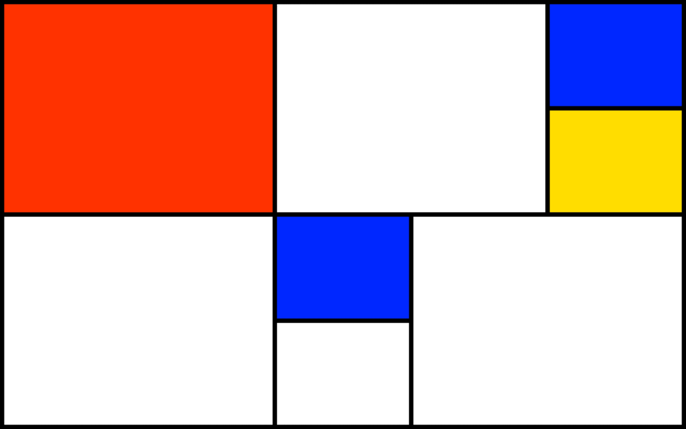
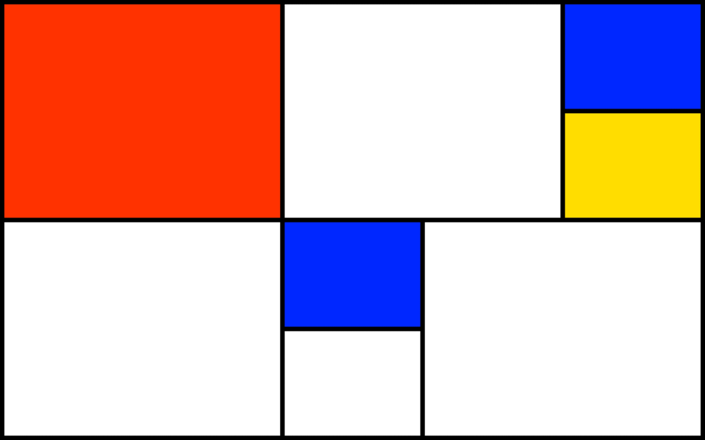

A monospaced  version of an existing typeface by a Swiss type foundry.
A transcription
version of an existing typeface by a Swiss type foundry.
A transcription  of the lecture excerpt by Luna Maurer from Moniker, designed in a way to reflect the content & the speech itself.
Luna Maurer is one of the founders of the Amsterdam-based design studio Moniker. At Moniker they work with the influence of the media and technology on our everyday life and focus on processes rather than products. They use Conditional Design as a term that refers to their approach rather than the chosen media. The process is the product, and it produces formations rather than forms. Logic is the tool and it is used to design the conditions through which the process can take place. Applied rules are used as constraints, which sharpen the perspective on the process and stimulate play within the limitations. Finally, the input is the main material. It engages logic and activates and influences the process. I decided to use the similar approach for the transcription of Luna's speech. Typesetting itself became the process and the product. The input was the recorded speech. Logic and rules depended on record's sound wave visual appearience and influenced the baseline changes in the applied typesetting. But obviously computer speech recognition did make mistakes sometimes. It heard 'Monica' instead of 'Moniker' & 'home' when Luna just filled a tiny pause with something like 'ahem'. Eventually, it became a project about the interaction between human and a machine in general, between human speech and its computer recognition and interpretation in particular.
The curatorial essay
of the lecture excerpt by Luna Maurer from Moniker, designed in a way to reflect the content & the speech itself.
Luna Maurer is one of the founders of the Amsterdam-based design studio Moniker. At Moniker they work with the influence of the media and technology on our everyday life and focus on processes rather than products. They use Conditional Design as a term that refers to their approach rather than the chosen media. The process is the product, and it produces formations rather than forms. Logic is the tool and it is used to design the conditions through which the process can take place. Applied rules are used as constraints, which sharpen the perspective on the process and stimulate play within the limitations. Finally, the input is the main material. It engages logic and activates and influences the process. I decided to use the similar approach for the transcription of Luna's speech. Typesetting itself became the process and the product. The input was the recorded speech. Logic and rules depended on record's sound wave visual appearience and influenced the baseline changes in the applied typesetting. But obviously computer speech recognition did make mistakes sometimes. It heard 'Monica' instead of 'Moniker' & 'home' when Luna just filled a tiny pause with something like 'ahem'. Eventually, it became a project about the interaction between human and a machine in general, between human speech and its computer recognition and interpretation in particular.
The curatorial essay  exploring the establishment of the Einstein's Spacetime concept in avant-garde art.
A small project  about choosing suitable content to work well with an already existing layout.
A book
exploring the establishment of the Einstein's Spacetime concept in avant-garde art.
A small project  about choosing suitable content to work well with an already existing layout.
A book  designed as a visual response to one finding in the secondhand bookshop.
An astrological bot
designed as a visual response to one finding in the secondhand bookshop.
An astrological bot  generating odd daily forecasts. So generalized, yet so personal.
A lyrics animation
generating odd daily forecasts. So generalized, yet so personal.
A lyrics animation  music video.
An essay
music video.
An essay  questioning one of the most famous 'rules' of the graphic design through the years.
Some information about who I am
questioning one of the most famous 'rules' of the graphic design through the years.
Some information about who I am  and how to contact me.
and how to contact me.